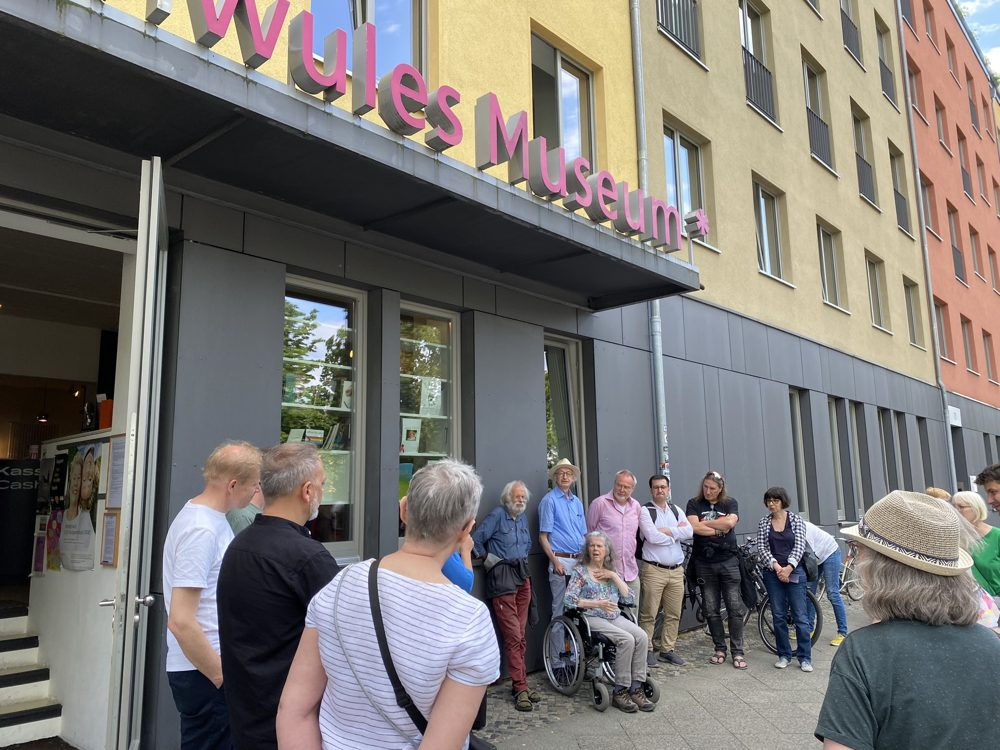
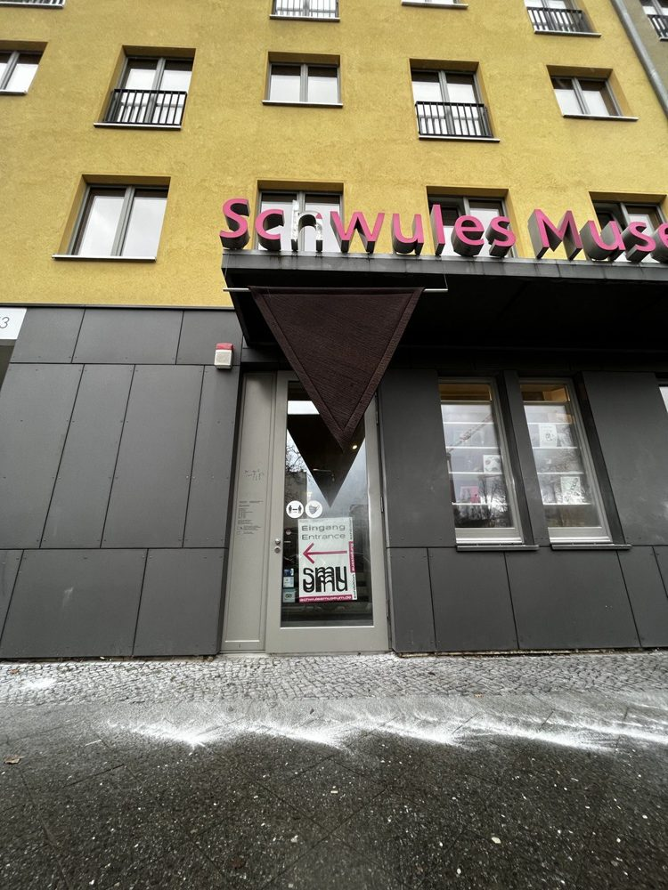

Its German name is the Schwules Museum. The neighborhood paper calls it the SMU, and for four years it has slipped the museum’s calendar in between the weather and the moon. This page reads all of it, so you walk in already knowing the house.
Everything here is read out of those posts, and each part links back to its source. When a post gives a date, that is the date it printed. Where the archive has nothing, the page says so.
How to read it:Names look like thisarchiveattacks are themesTimeline cards are attackhistorythe house
Going this weekend
Date prep
You are looking for pink letters over a grey door on a mustard-yellow building. That is how the photos in the posts show it.

The door in June 2023, with a neighborhood walk stopped outside. Photo: FP, from the walk piece.
The two dates that matter
Monday, 2 November 2026 is the last day listed for “Cruising the Countryside – Queeres Leben auf dem Land.” That is the May 2026 listing, so check for an extension. It is the one show the archive can say is still up.
Sunday, 1 November is a first Sunday. From June 2022 to October 2024 the listings give first Sundays as free, 14:00–18:00, with a ticket from the Museum Sunday shop. The 2025 and 2026 listings do not repeat it, so confirm before you count on it.
Check these before you leave
Hours. The last ones in the archive are from January 2023: Mon, Wed, Fri 14–18, Thu 14–20, Sat 14–19, Sun 14–18, Tue closed. They may have changed. schwulesmuseum.de knows.
Tours. In May 2026 the public tours were Thursdays 18:00 and Saturdays and Sundays 16:00, free once you are inside. For Cruising the Countryside, Saturday was German and Sunday English. That is a pattern from one month, not a promise.
The plan, in order
Eat first.SOLE DELI, Zietenstraße 7. The September 2025 post has it open 9 to 6 daily, Mediterranean, tables outside under an orange umbrella, banana bread 7.50 €, a vegan breakfast plate 13 €, and gluten-free and halal on the menu. The museum’s Sunday closes at 18:00, so lunch first and the building after.
The museum. Lützowstraße 73. The posts give no length for a visit, so leave room. Go for what is up: Cruising the Countryside, and a house that has been open since 1985. Say hello to the café, which is where the volunteer evenings meet.
Optional: keep going. The afternoon around it runs on to the AIDS-Hilfe on Kurfürstenstraße, Nollendorfplatz, and a street sign that still wears its old name. Everything is on the longer walk.
Would you rather volunteer in the archive or in the café?
If the museum could only keep one object from your life, which?
What would you put in a made-up museum, the way the sex-work show did?
Which of the forty years would you have wanted to walk in on?
A gentle heads-up
The shows named in the posts cover sex work, HIV and AIDS, Nazi persecution, and sexual violence against children, along with joy, fashion, and parties. Not every room is light. Check what is on so the two of you can choose.
Timeline
Forty years, then the last four of them month by month. Tap a link to see the post.
Attack (red): something done to the museum.
History (gold): an exhibition or talk about the past, which is most of what is on the walls.
The house (pink): the museum’s own everyday life, like neighbors, anniversaries, hours, and volunteers.
Show:
History1985
The house begins
Founded to research and show gay life, including its suppression.
The focus later widened to all sexual identities and ideas of gender.
That description is credited to Berlin.de in the post.
Four shows, a first-Sunday habit, and the hours get printed
June: “Encantadas,” transcendental art from Brazil. Tuntenhaus Forellenhof 1990 opens on 30 June, the squatted Tuntenhaus on Mainzer Straße 4.
June: the audio walk “Historical Citizenship” takes sex workers through 15 stations of the Bülow neighborhood, and the museum hosts the launch on 2 June.
1 September:“Queering the Crip – Cripping the Queer,” the first international show on queerness and disability. Curators Birgit Bosold, Kate Brehme, Kenny Fries.
October:Carrie Sandahl talks about the word “to crip,” which she coined in 2003.
1 December: the Bülowbogen audio walk, “We Have Always Been Everywhere,” launches, with a reception back at the museum.
19 March: food smeared on the entrance while the museum was open, staff insulted.
31 March: a fire extinguisher emptied over the front, also during opening hours.
21 and 28 May: water balloons thrown into the foyer.
Under all that, a daily drip: anti-queer stickers outside, far-right stickers in the toilets, knocks on the glass, abuse by phone and in the guest book.

Traces of the 31 March extinguisher attack, and the shot-up sign. Photo: mino Künze.
The show “Aufarbeiten” looks at sexual violence against children and young people in the name of emancipation. It runs to 26 February 2024.
On 14 December a free discussion, “Generation Übergriff – Generation Konsens?”, asks whether a thesis about the gay movement’s past alliances holds up.
The same post warns: karaoke on 1 December is at Queerdom, not at the museum.
26 March: the vernissage of “With Legs Wide Open. A Whore’s Ride Through History,” a fictional museum of sex work, curated by Ernestine Pastorello, Rori Dior, and Valentin Rion. The March post gives it until December. By July it ends 26 August.
Talks and flashmobs ride along: a heart-shaped bed, witch trials and sex work, and male and gay sex work.
5 April: “Creating Our Own Pasts,” a queer BIPoC archive workshop.
September: “Analog,” four photographers from the collection, to 30 September.
17 October: “Strategien der Resilienz” opens, about Eberhardt Brucks, curated by neo seefried.
26 October: the porn film archive opens for an afternoon of VHS, DVD, and Super 8, billed as the largest such collection in a German institution.
“Young Birds from Strange Mountains” is up, queer art from Southeast Asia and its diaspora, to 4 August. A flashmob on 9 March, “Das Archiv der Young Birds,” is led by archive curator Thảo Hồ. On 18 April, Sarnt Utamachot and Ferdiansyah Thajib give a curators’ tour, and artist Eda Phanlert Sriprom talks on 20 April.
13 March: opening of “Sweetmeet Shindook,” a queer archive traveling between Bangladesh and Germany.
“Strategien der Resilienz” is extended to 12 May. The question it asks: was Brucks a quiet bystander, or someone in danger finding his own way to exist?
The anniversary is 6 December, and Sunday the 7th, 14–18, is free for everyone.
On the walls: Petra Gall’s photos of Berlin’s lesbian scene (to 23 Feb 2026), queer Ukrainian art (to 25 Jan), and “Love at First Fight,” queer movements since Stonewall (to 29 June).
9 December: volunteer evening. 12 December: a queer-writing workshop with Lynn Breedlove and Panda Ortmann, in English, 10 € or 3 €.
Birgit Bosold, Kate Brehme, Kenny Fries “Queering the Crip,” 2022.
Kai* Brust, Andreas Pretzel The Sonntags-Club show, 2023.
Sarnt Utamachot, Ferdiansyah Thajib “Young Birds from Strange Mountains.”
Workshops and talks
Isabelle Dikumbi The Rest Bath, 2023.
Lynn Breedlove and Panda Ortmann Queer writing, 2025.
Carrie Sandahl On “to crip,” 2022.
Syrus Marcus Ware Pink Splashes, 2022.
Ursula Probst A reading on migrant sex work, 2024.
Felicia Rolletschke Queer history for teens, 2026.
Nils Meyn, Simon Schultz, Ben Miller The porn film archive, 2024.
Jen Igersky, Anders Johan Malmgren Tours in German Sign Language.
In the frames
Magnus Hirschfeld A bronze bust of him sits in the museum.
Eberhardt Brucks Subject of the 2024–25 show.
Rüdiger Trautsch Fifty years of photographs, 2023.
Petra Gall, Annette Frick Photographers of the lesbian scene and of “Fuck Gender.”
Eda Phanlert Sriprom Artist, 2025.
The themes
The same eight threads keep coming back. Each one is also a tag on the timeline.
attacks The house under pressure
Five attacks in one spring: an air rifle, food, an extinguisher, and two rounds of water balloons.
The insurer asked if a pane full of holes needed replacing, since it held. The museum paid for the sign, the artwork, and the cleaning.
Their request was money, staff, and care, past the police report.
archive Keeping things
About 1.5 million items, under 700 m² of galleries, up to three shows at once.
The porn film collection, “Unknown Objects,” zines, and the Hirschfeld bust.
Forty years of “organizing, collecting, archiving, and exhibiting.”
sex work The history of sex work, told by sex workers
Two audio walks in the Bülow neighborhood, 2022.
“With Legs Wide Open” in 2024, a made-up museum inside the real one.
A workshop for sex workers only, October 2024.
disability Queerness and disability
The first international show on the topic, September 2022.
Tours in German Sign Language across the years.
The Brucks show asks how a disabled gay man lived under the Nazis.
women and lesbians Lesbian and feminist history
Petra Gall’s photographs of Berlin’s lesbian scene.
The magazine “Jahr der Frau_en,” linked from the footer of nearly every listing.
A May 2026 talk on lesbian Mondays, Lipstick, and SO36.
the wider world Beyond Berlin
Southeast Asia, Ukraine, Brazil, and the German countryside, each with a show.
A big queer street fair, the Long Night of Museums, and the Pornfilmfestival.
HIV and AIDS A long memory
“Oral HIVstory” is a standing online project.
A Kurfürstenstraße AIDS-Hilfe piece from December 2022 sits in the same archive, and the Sept 2024 listing mentions a talk on the 1980s AIDS discourse.
the block A good neighbor
The Villa Lützow garden party, Queerdom down the street (Lützowstr. 28), and the district walks that stop at the door.
Neighbors turn up in the posts: councillors on the walk, and a stall next to the flea market and the neighborhood forum.
Tickets
Nothing here is today’s price list. These are the numbers the posts printed.
Admission, 2022–239 € · 3 € reduced
First Sundays, 2022–24Free, with a ticket
9 € and 3 € reduced are printed in October 2022, January 2023, and June 2023. After that the posts say “you only pay admission” and drop the number.
First Sundays are free, 14:00–18:00 (12:00–20:00 in June 2022), in listings from June 2022 to October 2024. Get a slot at shop.museumssonntag.berlin.
7 December 2025 was free on its own, for the fortieth.
Tours: free once you are inside. Registration is “not necessary.”
Evenings with their own price: 4 € for several talks and workshops in 2022 and 2024, 10 € or 3 € for the porn-archive afternoon and the writing workshop. Those sign up by email: fuehrungen@schwulesmuseum.de.
A bust of Magnus Hirschfeld in the museum. Photo via Wikimedia Commons, from the Hirschfeld piece.
His own institute was ransacked in May 1933. In this street, the bust is what the piece points to.
You may nap
At The Rest Bath in August 2023, the workshop says outright that doing nothing at all is fine. The blue-moon month.
A bed in the gallery
July 2024: Rori Dior leads a talk on a heart-shaped bed about the material side of sex work, “von Po-Tunneln bis zu Feuchttüchern.” Honey month.
Witches
7 August 2024: a flashmob called “Gab es sexarbeitende Hexen?” on witch trials, sex work, and today’s abortion politics. Augustus’s month.
The moving end date
“With Legs Wide Open” runs to December 2024 in the March post and to 26 August in July’s. “Love at First Fight” is given a new end date again and again, to 2026. Always check.
One room only
27 Feb to 4 Mar 2024: only Room 1 is used, for “Love at First Fight” and the Sonntags-Club show. The post does not say why. Lenz.
Month nicknames
The paper hangs an old name on every month: Engelmonat, Wonnemonat, and for July, hay, bear, and honey. Then the program.